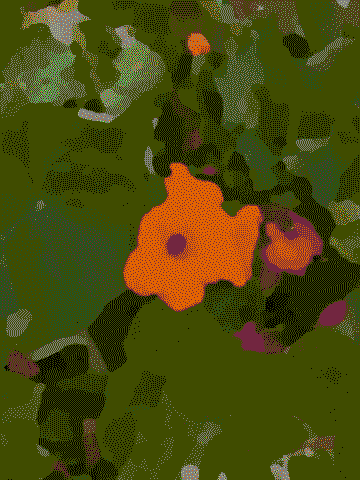
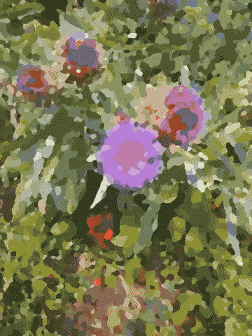

Slime versus real life
And if they were forced to look straight at the light, would that not make their eyes hurt? Would they not try to avoid the light and turn back to the things that they can see? And would they not think that in reality the shadows are more clear than the objects they are forced to look at? - The Allegory of the Cave, Plato.
The summer that the parks became yellow and dusty, the roads themselves started to melt and wildfires raged across new territory, I got really into videos of slime.
Anyone who has used social media in the past ten or so years is familiar with the undertow of algorithmic content - you might be pleasantly scrolling your chosen user accounts when a tide of unrelated content sucks you out into an ocean of high cortisol. Recently, it’s felt like the tide is ever more powerful and insistent. Linger a millisecond too long on a video about toned abs and you might lose 30 minutes of your life getting alternately educated and enraged by fitness influencers on Instagram. The concept of a feed that is chronological and only consisting of who you follow feels like a completely archaic concept now.
I was in the grip of feeling powerless earlier this year. I spent at least 30 minutes of every precious morning hunched over my phone scrolling Instagram, waiting for some combination of content and brain chemistry to release me. At some point it felt “ok” to put the phone down, to wrench my brain away, and I can only describe it as the brain feeling completely smooth.
It was during this bout of addiction that I lingered on a video of the type I hadn’t seen before. It was a bucket of candy coloured, hyper pink and blue viscous liquid, with a crackle of wax over it that was broken by the tap of a stainless steel ice cream scoop on an endless loop. The noise of the crackle, the impossibly bright and smooth gliding colours, all served to touch some inner soft marshmallow part of my brain and I tingled all over. I went to the account and spent many minutes looking at their endless feed of scooping and squishing a parade of different coloured slimes.

It reminded me of abstract art - a Bridget Riley-esque precision, an Anish Kapoor playfulness. But mostly it just made some primal part of me go - nice. Beyond words, beyond the righteous anger or destabilising complexity of the rest of my feed, I could immerse myself in the impossibly smooth contours of glowing slime.
In Patricia Lockwood’s No One is Talking About This, she writes “Attention is Holy, it is the soul spending itself”. Was I spending my soul on these videos? It felt like I was being extracted from, the app had me in its grip. These slime videos were a way to sort of hack into a transcendent state away from the attention economy, I could watch them for minutes at a time and leave the phone neither enraged nor happy nor comparing myself to others, simply awash with colour and sound. But what a hollow victory over social media, to spend my precious limited time alive gawping at scoops of multicoloured glue.
I needed to venture out into the real world and find things that might make me feel the same way. That might flash a sublime glowing rod straight through to a deep and old part of my brain. That might trigger that ASMR frizzle through the body.
So, before I spent my morning of allotted scrolling, I went on walks around my local parks and I started noticing things. A blackbird hunting in sun dappled leaves, shadows of tree canopy on a path, buzzing insects on a frowsy mint plant. I used my phone to capture what I noticed, forcing me to pause even longer and observe a little closer.
I started noticing colours and light all around me, and finding flashes of the neon, the fluorescent or the luminous in the world that I had so loved in the slime.

Since I was a kid I’ve been sucked in by the power of words and images. I can’t totally blame social media, it started when I realised I could completely lose all touch with reality in a library book. When TV characters started to feel like friends. The internet just upped the saturation levels. A harder drug, but the same chemical family.
I’ve given so much power to these other worlds, have spent so much of my soul on them, only to look up from the page and realise there’s a whole other world I haven’t been paying attention to. How it is to be here, now.